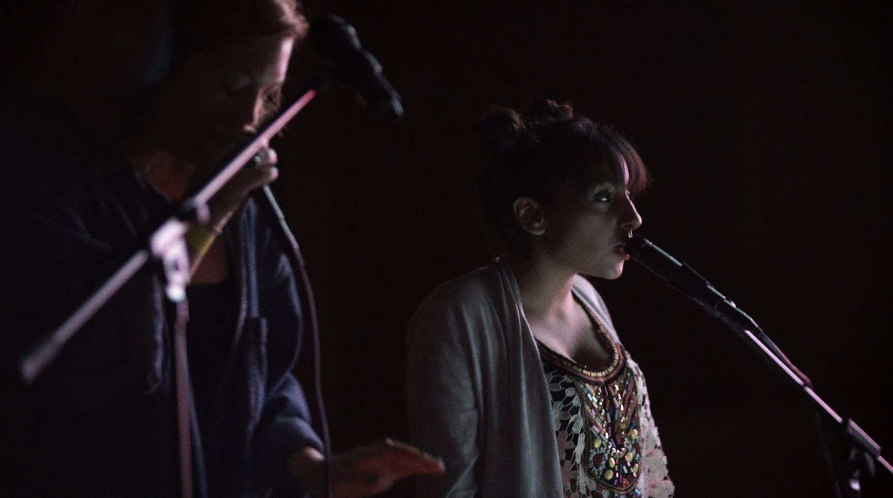

<html>
<head>
  <style>
  </style>
  <title> Neeta : Music Production | Composition | Sound Designer  </title>
</head>
<link href="bootstrap-3.3.7-dist/css/bootstrap.min.css" rel="stylesheet">
<link rel="stylesheet" href="Styling/main.css">
<link rel="stylesheet" href="Styling/navigation.css">
<link rel="stylesheet" href="Styling/showreel.css">
<link rel="stylesheet" href="Styling/aboutMeandContact.css">
<link rel="stylesheet" href="Styling/hovers.css">
<script src="https://ajax.googleapis.com/ajax/libs/jquery/3.1.1/jquery.min.js"></script>
<script src="https://maxcdn.bootstrapcdn.com/bootstrap/3.3.7/js/bootstrap.min.js"></script>
<script type="text/javascript" src="js/handlebars-v4.0.5.js"></script>
<script type="text/javascript" src="js/audiotemplate.js"></script>
<script type="text/javascript" src="js/loadComponents.js"></script>
<script id="entry-template" type="text/x-handlebars-template">
<div class="main">
  <div class="page-header header">
    <div class="row">
      <div class="col-xs-6 col-md-10">
        <div class="col-xs-6 col-md-4" id="logo">
        <a href="index.html" onclick="showVideos()">  <span class="glyphicon glyphicon-play-circle" aria-hidden="true"></span> n e e t a </a>
        </div>
        <div class="col-xs-6 col-md-7">
          <ul class="nav nav-pills">
            <li class="active"><a data-toggle="pill" href="#about" class="hvr-push" onClick="hideVideos()"> about</a></li>
            <li class><a href="showreel.html" class="hvr-push" onClick="hideVideos()">showreel</a></li>
            <li class><a href="contact.html" class="hvr-push" onClick="hideVideos()">contact </a></li>
          </ul>
        </div>
      </div>
      <div class="col-sm-2">
          <a target="_blank" href="https://www.facebook.com/neetamusik">
            
            </img>
          </a>
          <a target="_blank" href="https://twitter.com/neetamusic">
            
            </img>
          </a>
          <a target="_blank" href="https://www.linkedin.com/in/neeta-sarl-1887a818">
            
            </img>
          </a>
      </div>
  </div>
</div>
  <div class="content">
    <div class="row">
      <div class="container">
        <div class="col-xs-6 col-md-1">
        </div>
        <div class="col-xs-6 col-md-10">
                <div class="contentBlock">
                  <div class="title"> ABOUT </div>
                    <p class="blurb">
                      I am a little, techy, music lady currently based in London, UK. I’m currently working as a freelance producer, composer, musician and vocalist. I’m passionate about electronic music, and particularly interested in the boundary that lies between live/acoustic performance and electronic sound. I love many aspects of the music making process and over the years have developed a wide set of skills both in the studio and on the stage. I work mostly from my home studio using Logic Pro & Ableton but still have a big love for Cubase which I learned my craft on. I am a professionally trained musician, I majored in composition at Leeds College of Music (1st) and am a grade 8 classical pianist and vocalist.  My sound as an artist/songwriter is soulful, cinematic and electronic but I’ve also composed in a number of styles including acoustic, folk, pop, RnB, hip-hop, eastern fusion, jazz, cinematic, orchestral, vocal, drum and bass, house & calypso. I design loop packs for a number of sample pack companies, and currently create ongoing bespoke sound packs for Novation’s apps Launchpad & Blocs Wave for iOS. On going I also compose/produce music to brief for BMG Chrysalis. As an artist I’ve released on independent labels and gigged a lot around the UK and festival scene. A number of my tracks have received national radio play and have been used for sync on television shows, adverts and corporate videos. As a producer I’ve produced and mixed for a number of different independent artists and bands.

                      <BR><BR><a data-toggle="pill" href="#contact" class="call-meh">Get in touch</a> if you like my style and would like to get me involved in a project - I’m available for production, mixing, songwriting, composing, singing, recording & playing live. I’m particularly excited by new technologies and hardware but up for anything unique and interesting that I can vibe to.

                      <BR><BR>Thanks for listening!
                      <BR>
                    </p>
                    <figure>
                      
                      <figcaption class="caption"> Music Tech Fest, Berlin 2016 </figcaption>
                    </figure>
                </div>
        </div>
      </div>
    </div>
  </div>
</div>
</script>
<body class="background">
</body>
</html>
